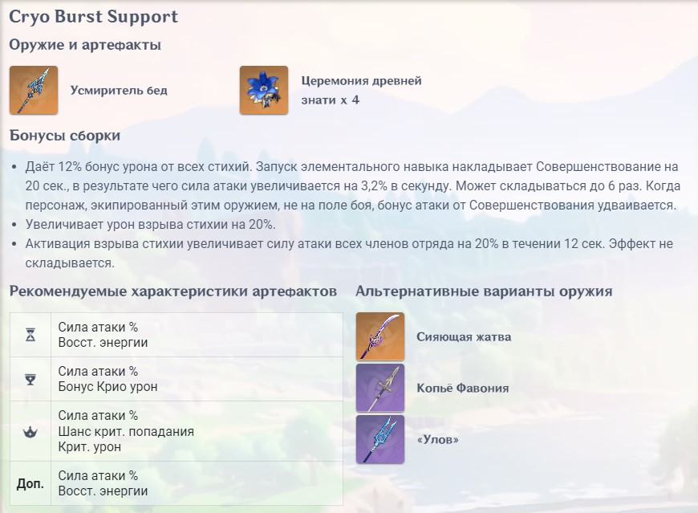
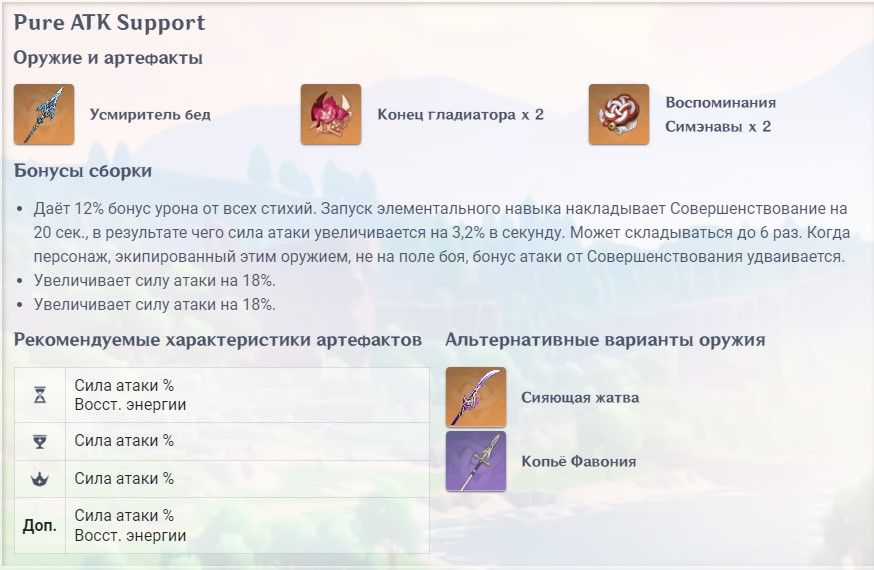

Шэнь Хэ в Геншин Импакт – новая ⭐️⭐️⭐️⭐️⭐️ Крио копейщица, которая появилась в игре в патче 2.4. Данный герой упоминается в сюжетных квестах региона Ли Юэ как ученица адептов. В качестве игрового персонажа ориентирована на роль саппорт дд.
Для Шэнь Хэ лучше всего подходит роль персонажа поддержки (саппорта). Хоть по мере возвышения она получает бонус к Силе атаки, весь ее потенциал реализуется именно в качестве поддержки, а не персонажа урона.
Лучшим вариантом оружия для Шень Хэ будут Усмиритель бед, Сияющая жатва или Небесная ось. В качестве бесплатного оружия отличным вариантом станет Улов.
